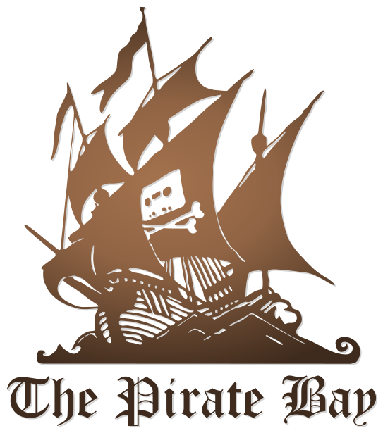

1990-1993
1990-1993
1990 skapas www eller World Wide Web som det står för. Det var en man som hette Tim Berners-Lee som skapade den första webbplatsen för ett forskningscentrum han arbetade på.
 1994-1995
1994-1995
Cookies stöter du ofta på när du surfar på nätet. Många tror att det är de informations-rutor en vanligtvis klickar bort innan en fortsätter surfa vidare på sidan. Men vad är cookies egentligen?
 1996
1996
Adobe Flash är ett datorprogram du kan använda för att skapa animerade bilder, video och dataspel. Nu började webbutvecklare använda sig av Flash och webben fick en helt ny stil. Det var möjligt att se animerade videor och bilder på en webbsida
 1998
1998
Google.com, den mest populära sökmotorn som nästan alla i världen känner till, föddes detta år.
 1999-2002
1999-2002
Ajax är ett program som finns till för att effektivisera konstruktionen av applikationer. Namnet står för Asynchronous JavaScript and XML, och det är ett namn som inkluderar flera olika tekniker.
 2004-2005
2004-2005
Facebook är ett socialt nätverk där en skapar en personlig profil med information om en själv. Därefter kan en “bli vänner” med andra personer som skapat profiler.
 2005-2006
2005-2006
År 2005 är det år då Piratpartiet skapas. Frågan är varför och hur?
 2006
2006
Twitter, Spotify, Iphone, like-knappen, surfplattan, instagram. Nu kunde en användare bara skicka iväg några meningar direkt ut till sina följare.
 2015
2015
 Framtiden
Framtiden
Hur kommer internet att se ut i framtiden? Det är svårt säga, men här är några spekulationer

Nu kommer piraterna 2005 - 2006
Varför kom piraterna?
År 2005 är det år då Piratpartiet skapas. Här kommer en liten förklaring till varför det skapats.
The Pirate bay, en svenskbaserad trackersajt skapades 2003 och skulle till att bli en av de största. En trackersajt är en dataöverföringsteknik som används inom Bittorrent som används för att koppla ihop olika klienter online och göra det möjligt att dela och använda sig av material på nätet. The Pirate Bay sprider digitalt material genom sin webbsida, där besökaren har möjlighet att ladda ned filerna som kan vara olika typer av mjukvara eller filmer, spel och musik. Att dela och ladda ned filer från internet har sedan år 2005 varit olagligt. Deras sida har ett flertal gånger plockats ned av den svenska polisen men kort därefter lagts upp igen av entusiaster runtom i världen.
Det skapades även en organisation som hade namnet Piratbyrån som ville skapa en diskussion om just piratkopiering av mjukvaror. Piratbyrån stod för att det skulle vara fritt att dela med sig av filmer, musik och information och var motståndare mot Svenska Antipiratbyrån som vill skydda film och spelindustrin mot just piratkopiering. Det uppstod en stor diskussion och blev tillslut en politisk fråga.
Här är piraternas skepp (och logga) där det är ett kassettband istället för en dödskalle.

Bild av The Pirate Bay, Wikipedia, 26-08-2007
Fildelning
Nu kommer lagen om att det är olagligt med fildelning i Sverige, vilket gjorde att en inte längre fick ladda ned andras filmer och musik utan tillstånd. Många är nu glada att det äntligen finns en lag säger detta, men kan ni gissa vilka som inte blev lika glada?
Piraterna styr skutan mot riksdagen
Piraterna bakom The Pirate Bay och dess användare var inte glada över den nya lagen och genom detta missnöje skapades Piratpartiet. De frågor de stod för var personlig integritet, fri kultur och att upphovsrätten skulle avskaffas. Piratpartiet fick mycket stöd sina första år och är än idag ett parti som går att rösta på.